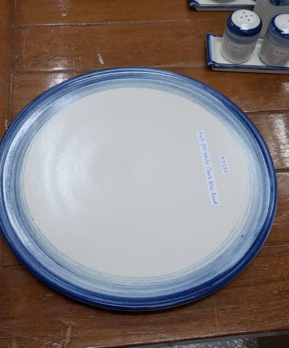
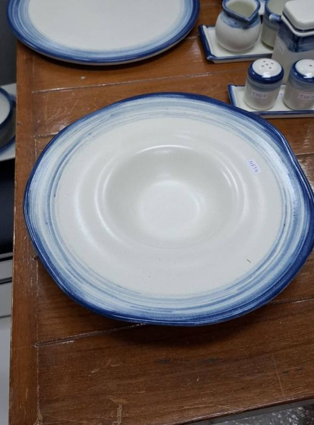
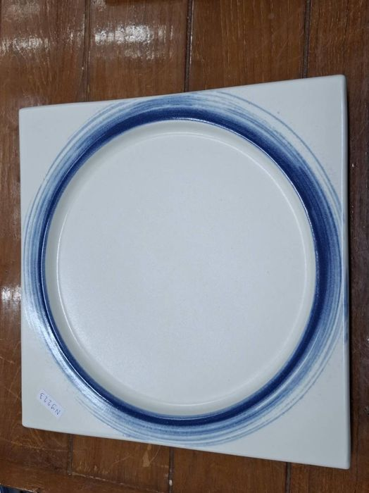
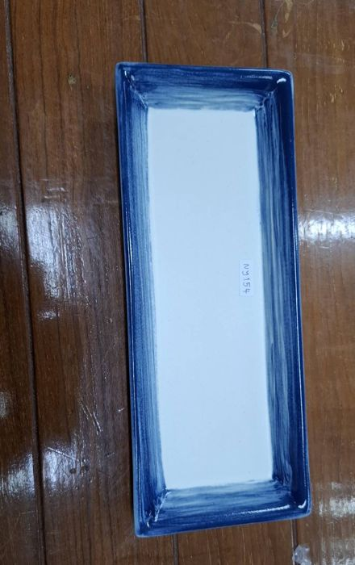
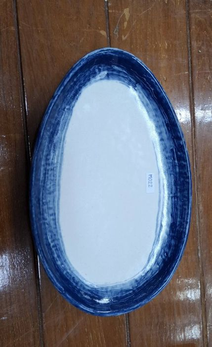
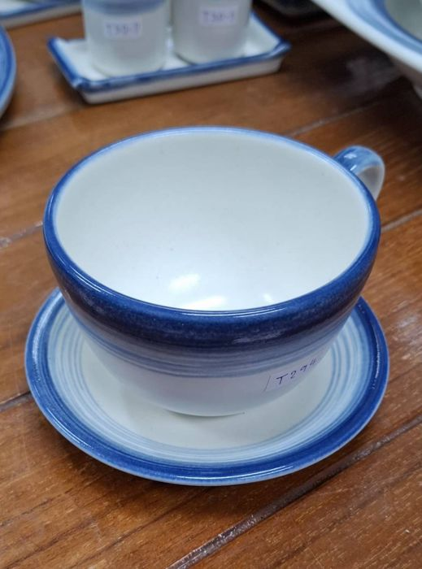

Three proposals to make KIN’s current identity richer and more distinctive. The logo, the three colours and the two typefaces stay exactly as they are. What changes is how we use them: patterns, engraving, colour reversal, tone and finish. Compare them side by side, then comment on each.
The current identity is correct but too quiet: flat navy, cream and gold reads like a yacht club, not a restaurant with two kitchens. Each direction below keeps everything already approved and adds a graphic language KIN can own.
Cobalt lips, spun brush bands that feather into a cream well, dry-brushed edges on rectangular trays. Not flowers or tiles: rings, bands and brushwork. Direction B is built directly on this.






The current identity next to the three proposals, on the same four applications. Open a direction above to see its full system: tone, pattern, illustration, menu, social, print and website.